财务会计 FI（Financial Accounting）
财务会计 · 组织结构 · 科目主数据 · 应收应付 · 财务报表
1. 本模块导读
FI 主线是「先搭组织结构，再建科目，最后跑凭证与报表」：组织结构（公司代码 / 会计科目表 / 会计年度变式 / 信贷控制范围）→ 全局参数 → 科目组与字段状态变式 → 科目主数据（资产负债、统驭科目应收应付、材料采购 GR/IR、损益）→ 凭证号码范围与记账期间 → 过账容差组 → 总账凭证与余额 → 客户/供应商账户组、编号范围与主数据 → 应收应付（客户发票 / 收款 / 供应商发票 / 付款 / 余额）→ 财务报表结构（资产负债表与损益表）与报表运行。
本站按原文档顺序保留 45 个任务，每个任务都给出 IMG 路径、T-code（文档中出现的）与原文档的实机画面。教材场景是「颐宁机械有限公司」从零建公司代码 C999，一直做到能出资产负债表和损益表。
- 组织结构四件套：公司代码 / 会计科目表 / 会计年度变式 / 信贷控制范围
- 科目主数据：
FS00新建一般资产负债科目、统驭科目（应收/应付）、材料采购科目（GR/IR）、损益科目 - 记账期间与凭证号码范围：开关账机制（关掉的期间不允许改凭证）
- 应收应付闭环：客户发票
FB70、收款、供应商发票FB60、付款、余额查询（FD10N/FK10N）
文档中出现的 T-code：FS00 FB50 FB03 FS10N FD01 FK01 FB70 FD10N FB60 FK10N（完整说明见 T-code / IMG 路径速查）
2. 任务目录（45 个）
其中 34 个任务给出了原文档中的 IMG 后台菜单路径；带 后台 标注的是定制（配置）任务，带 前台 标注的是日常业务操作任务；没有标注的任务原文未指明，请按任务名自行判断（一般「定义/维护…参数」＝后台，「创建/输入/显示…凭证、订单、发票」＝前台）。
| 序号 | 任务 | 前后台 | 文档中的 T-code | 画面 | 手顺步 |
|---|---|---|---|---|---|
| 任务 01 | 创建公司代码 | — | — | 2 | 2 |
| 任务 02 | 创建会计科目表 | — | — | 2 | 2 |
| 任务 03 | 定义会计年度变式 | — | — | 2 | 2 |
| 任务 04 | 创建信贷控制范围 | — | — | 2 | 2 |
| 任务 05 | 维护公司代码的全局参数 | — | — | 2 | 2 |
| 任务 06 | 定义科目组及输入控制 | — | — | 9 | 9 |
| 任务 07 | 定义字段状态变式 | — | — | 19 | 10 |
| 任务 08 | 向字段状态变式分配公司代码 | — | — | 2 | 2 |
| 任务 09 | 定义存留收益科目 | — | — | 7 | 2 |
| 任务 10 | 新建一般资产负债科目 | — | FS00 | 2 | 2 |
| 任务 11 | 新建统驭科目－应收/应付 | — | FS00 | 10 | 3 |
| 任务 12 | 新建材料采购科目 | — | FS00 | 3 | 1 |
| 任务 13 | 新建损益科目 | — | FS00 | 72 | 36 |
| 任务 14 | 显示科目汇总 | — | — | 1 | 1 |
| 任务 15 | 复制凭证号码范围到公司代码 | — | — | 5 | 4 |
| 任务 16 | 定义记帐期间变式 | — | — | 2 | 1 |
| 任务 17 | 将记帐期间变式分配给公司代码 | — | — | 2 | 1 |
| 任务 18 | 设置记帐期间(前台) | — | — | 4 | 2 |
| 任务 19 | 定义过帐容差组 | — | — | 3 | 2 |
| 任务 20 | 输入总帐科目凭证 | — | FB50 FB03 | 4 | 4 |
| 任务 21 | 显示总帐科目余额 | — | FS10N | 11 | 7 |
| 任务 22 | 定义应收应付容差组 | 后台 | — | 3 | 2 |
| 任务 23 | 定义供应商账号组 | 后台 | — | 11 | 8 |
| 任务 24 | 定义供应商账户编号范围 | 后台 | — | 6 | 5 |
| 任务 25 | 分配供应商编号范围 | 后台 | — | 2 | 1 |
| 任务 26 | 定义客户账户组 | 后台 | — | 10 | 8 |
| 任务 27 | 定义客户账户编号 | 后台 | — | 5 | 4 |
| 任务 28 | 分配客户编号范围 | — | — | 2 | 1 |
| 任务 29 | 新建订货方主数据 | — | FD01 | 9 | 4 |
| 任务 30 | 新建收货方主数据 | — | FD01 | 0 | 0 |
| 任务 31 | 新建供应商主数据 | — | FK01 | 6 | 1 |
| 任务 32 | 输入客户发票 | — | FB70 | 3 | 2 |
| 任务 33 | 收到客户全额还款 | — | — | 5 | 4 |
| 任务 34 | 收到客户部分还款 | — | FB70 | 7 | 4 |
| 任务 35 | 显示应收帐款余额 | — | — | 4 | 1 |
| 任务 36 | 显示客户余额 | — | FD10N | 2 | 2 |
| 任务 37 | 收到供应商发票 | — | FB60 | 5 | 1 |
| 任务 38 | 模拟 | — | — | 1 | 1 |
| 任务 39 | 向供应商付款 | — | — | 3 | 2 |
| 任务 40 | 显示应付帐款余额 | — | — | 3 | 1 |
| 任务 41 | 显示供应商余额 | — | FK10N | 7 | 2 |
| 任务 42 | 总帐科目余额汇总表 | — | — | 5 | 2 |
| 任务 43 | 将收入科目设置为只能自动记帐 | — | FS00 | 7 | 2 |
| 任务 44 | 定义资产负债表和损益表结构 | 后台 | — | 29 | 23 |
| 任务 45 | 运行资产负债表 | — | — | 3 | 3 |
3. 手顺（逐个任务）
创建公司代码
2 画面 / 2 步| 项目 | 文档中的取值 |
|---|---|
| 公司代码 | C999 |
| 货币 | RMB |
| 语言 | ZH |
-
解释： 我们现在创建一家公司，并展开创建的此家公司的业务，我们创建的此家公司为颐宁机械有限公司。
公司代码描述的是一个完整的会计实体.有资产负债表等
画面 6image7.png · 394×363 教材笔记国家 CN -
公司名称 颐宁机械有限公司城市 上海
输入上述公司信息，如下图所示，输入完毕点击保存按钮
画面 7image9.png · 348×299
创建会计科目表
2 画面 / 2 步| 项目 | 文档中的取值 |
|---|---|
| 总帐科目号长度 | 8 |
-
解释： 创建会计科目表是进行会计部分设置最基础的工作，不同的公司代码可以分配给不同的会计科目表,关系是多对一，路径如下图，我们从头开始设置。

画面 8image10.png · 351×412 -
财务会计新－总帐会计新－总帐科目－主数据－总账科目-准备－编辑科目表清单按下图进行创建，创建完毕后点击保存按钮

画面 9image11.png · 600×443 教材笔记帐目表 A999原理说明说明 颐宁机械有限公司会计科目表维护语言教材笔记成本控制集成 自动创建成本要素
定义会计年度变式
2 画面 / 2 步-
解释： 会计年度变式将用于后续的财务操作，会计年度变式表明过账期间和特殊期间的数目，即在哪些期间进行过账

画面 10image12.png · 452×396 -
财务会计－财务会计的全局设置－会计年度－分类账－会计年度和过账期间－维护会计年度变式（维护缩短的会计年度）点击新建按钮新条目

画面 11image13.png · 798×489
创建信贷控制范围
2 画面 / 2 步-
解释： 信贷范围用于管理在进行信用控制时，信用在哪个范围内起作用。它是 SAP 销售和应收帐款模块中用于控制信用风险的组织结构.公司代码和信贷控制范围是多对一关系。
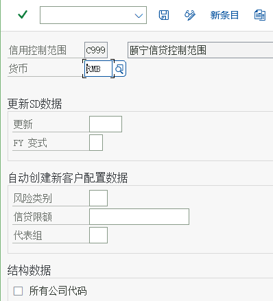
画面 12image14.png · 398×439 -
按上一屏继续操作（画面 13）
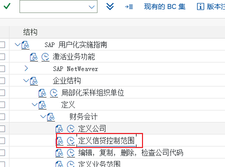
画面 13image15.png · 450×334 教材笔记C999 颐宁信贷控制范围教材笔记RMB
维护公司代码的全局参数
2 画面 / 2 步-
解释： 公司代码全局参数用于设置创建公司的帐目表，信贷控制范围，会计年度变式等。主要输入公司代码的全局参数,把上面的三个组织结构分配给公司代码。
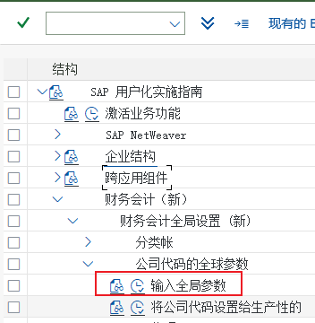
画面 14image16.png · 352×360 -
财务会计－财务会计的全局设置－公司代码－输入全局参数
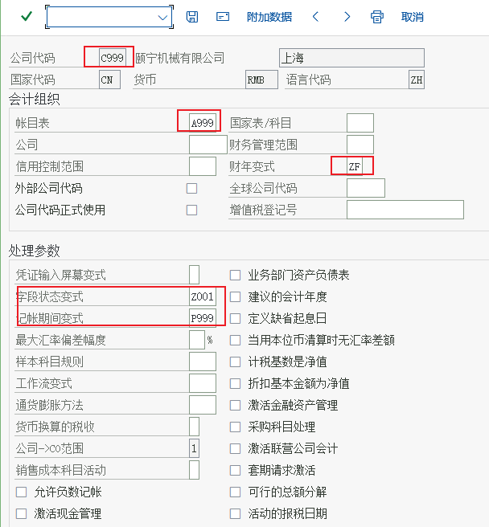
画面 15image17.png · 608×656 教材笔记帐目表 A999公司教材笔记国家表/科目财务管理范围教材笔记信贷控制范围 C999 会计年度变式 ZF
定义科目组及输入控制
9 画面 / 9 步双击进入会计科目表 A999 组 BSA
资产负债类科目
A999 BSA 资产负债类科目 10000000 39999999
A999 PLA 损益类科目 40000000 59999999
-
解释： 用于创建科目组，并进行输入控制，即在输入科目时，哪些字段允许输入，哪些字段隐藏等。科目组是将性质类似的科目分类，主要维护前台会计科目主数据。(统驭科目--字 段状态组--凭证输入)。

画面 16image18.png · 429×494 -
财务会计－总帐会计－总帐科目－主数据－准备－定义科目组

画面 17image19.png · 589×381 -
A999 RAA 统驭科目 11300000 21699999
双击 BSA 进入
画面 18image20.png · 398×377 -
双击科目控制

画面 19image21.png · 558×459 -
双击凭证输入

画面 20image22.png · 546×329 -
双击进入 PLA

画面 21image23.png · 267×385 -
进入账户管理

画面 22image24.png · 559×364 -
按上一屏继续操作（画面 23）

画面 23image25.png · 603×345 -
进入统驭科目

画面 24image26.png · 587×344
定义字段状态变式
19 画面 / 10 步新建如下组
-
解释： 字段状态变式是分配给公司代码的一项重要参数,在字段状态变式中罗列了很多字段状态组,而字段状态组是会计科目中的一个重要参数.它控制在输入一张会计记帐凭证时,该科目的那些辅助核算项目是必须输入的,哪些是不允许输入的,哪些是可以选择的

画面 25image27.png · 597×479 -
重点:科目组是控制科目中的参数,字段状态组是控制凭证中的辅助核算项
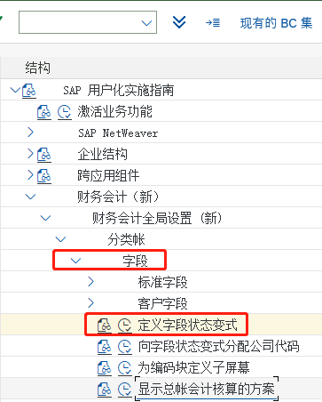
画面 26image28.png · 363×452 -
财务会计(新)－财务会计全局设置(新) — 字段－定义字段状态变式

画面 27image29.png · 447×123 -
Z001 公司代码 C999 字段状态组

画面 28image30.png · 445×125 
画面 29image31.png · 565×147 -
双击字段状态组
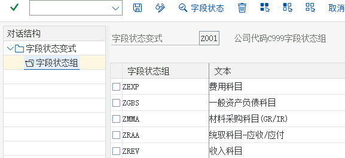
画面 30image32.png · 577×265 -
ZEXP 费用科目
ZGBS 一般资产负债科目 ZMMA 材料采购科目（GR/IR） ZRAA 统驭科目-应收/应付 ZREV 收入科目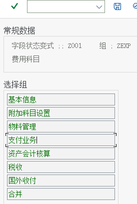
画面 31image33.png · 274×408 
画面 32image34.png · 481×542 教材笔记双击 ZGBS -
按上一屏继续操作（画面 33）

画面 33image35.png · 261×466 
画面 34image36.png · 512×866 -
双击ZMMA
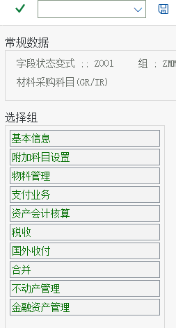
画面 35image37.png · 253×472 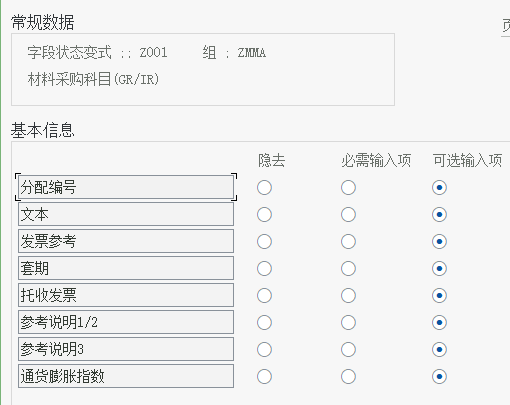
画面 36image38.png · 510×405 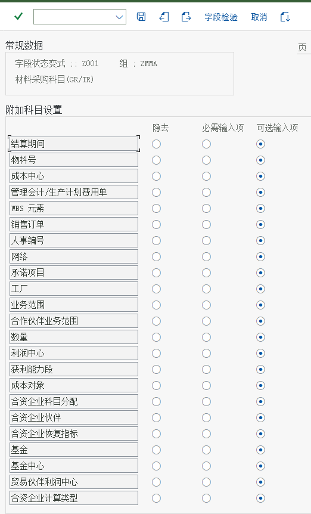
画面 37image41.png · 522×862 
画面 38image42.png · 521×427 画面 37image41.png · 522×862 画面 38image42.png · 521×427 -
系统会提示“不一致的字段状态，参加帮助文本”回车即可返回

画面 41image43.png · 508×554 -
双击 ZREV

画面 42image44.png · 362×466 
画面 43image45.png · 513×272
向字段状态变式分配公司代码
2 画面 / 2 步-
解释: 先分配给公司代码,以后可以把字段信息分配给会计科目

画面 44image46.png · 394×443 -
按上一屏继续操作（画面 45）

画面 45image47.png · 545×378
定义存留收益科目
7 画面 / 2 步-
财务会计(新)－总帐会计(新)－主数据－总帐科目－准备－定义留存收益科目
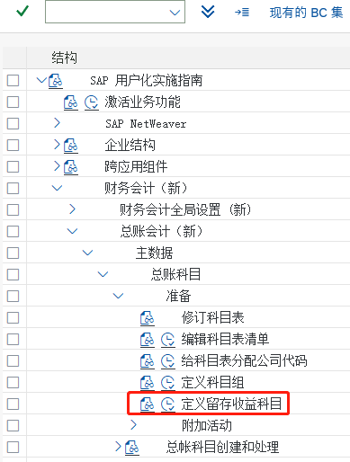
画面 46image48.png · 389×514 -
X 410901X 410901

画面 47image52.png · 333×221 
画面 48image53.png · 394×257 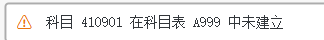
画面 49image54.png · 324×40 画面 47image52.png · 333×221 画面 48image53.png · 394×257 画面 49image54.png · 324×40 教材笔记系统提示“… 未建立” 回车即可通过
新建一般资产负债科目
FS002 画面 / 2 步点击新建科目按钮（带模板按钮边上那个按钮）帐目表: A999 = 颐宁机械有限公司会计科目表总帐帐号 科目名称
10010101 现金
10020101 银行存款－工商银行上海分行南京西路支行
10020111 银行存款－中国银行上海分行淮海中路支行 3101968
12110101 存货－原材料
12310101 存货－贸易商品
12430101 存货－产成品
-
事务代码：FS00

画面 53image55.png · 331×458 -
按上一屏继续操作（画面 54）

画面 54image56.png · 648×303 教材笔记31410101 利润分配－未分配利润教材笔记31010101 实收资本
新建统驭科目－应收/应付
FS0010 画面 / 3 步解释：这也是创建一些总账会计科目。不同的是这些科目，如应收帐和应付账款会有相应的明细分类账模块。如客户账户，供应商账户。业务入账只能记入这些明细分类账中，通过集成自动更新总账，而不能直接记入总账。这样杜绝了明细分类账和总账不付的情况发生。这些总账科目就为统驭科目。
| 项目 | 文档中的取值 |
|---|---|
| 事务代码 | FS00 |
-
其他总账科目创建如现金总账的创建
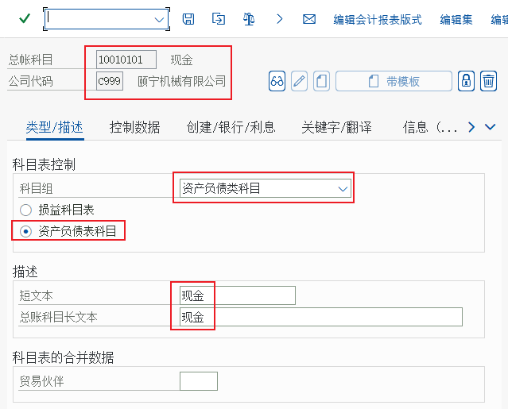
画面 55image57.png · 639×515 
画面 56image58.png · 643×663 -
创建应收账款 FS00 11310101
-
创建应付科目
21210101 应付帐款
画面 60image64.png · 626×520 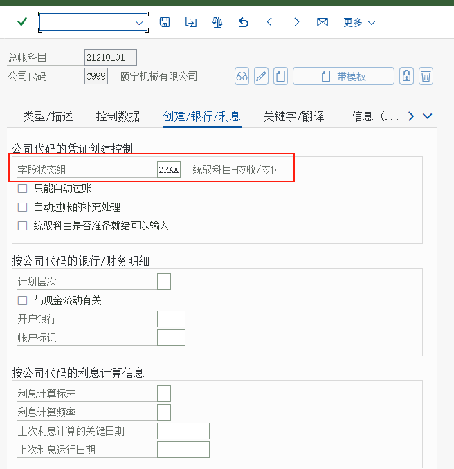
画面 61image65.png · 656×678 
画面 62image66.png · 664×779 画面 60image64.png · 626×520 画面 61image65.png · 656×678


新建材料采购科目
FS003 画面 / 1 步| 项目 | 文档中的取值 |
|---|---|
| 事务代码 | FS00 |
-
解释: 材料采购科目也是创建一个总账会计科目。这个科目需要"逐笔逐清"的中间过渡科目--材料采购科目。也叫 GR/IR(收货/收发票)。在收货时系统自动生成会计凭证。借:库存 贷:材料采购.而收发票时，系统也自动生成会计凭证。 借:材料采购，贷:应付账款.两边的"材料采购" 凭证行相互匹配的过程叫"清账"，对上的叫"已清项"，对不上的叫"未清项"，未清项反映了货或者发票有一方未到。这是个风险点，其他需要用"清账"来管理的科目大多是一些中间过渡科目，如银行未达科目。或者是反映债权债务(但又不用应付应收模块管理)科目，如长期借款。客户和供应商明细账就是采用清账来管理的。
创建材料采购－GR/IR 科目


新建损益科目
FS0072 画面 / 36 步解释：损益类科目的特点是在做年结的时候，损益类科目的年末余额会结转到"未分配利润
"(或者本年利润)科目的年初余额。而他们自己的年初余额清为 0。
创建损益科目
| 项目 | 文档中的取值 |
|---|---|
| 事务代码 | FS00 |
-
51010101 主营业务收入-自制产品

画面 68image73.png · 620×507 
画面 69image74.png · 624×744 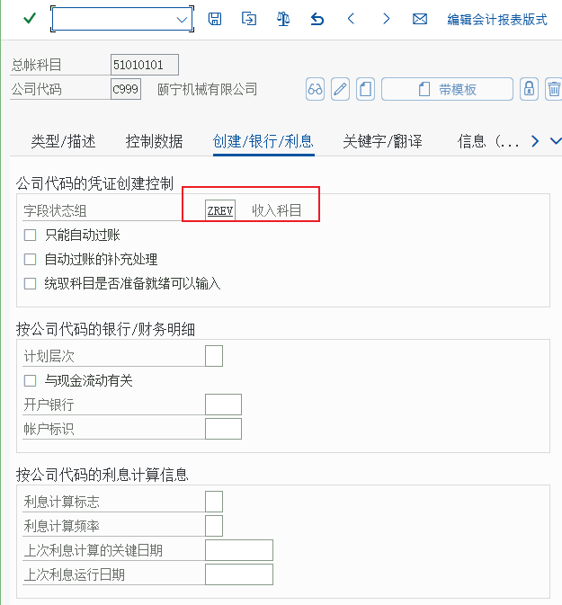
画面 70image75.png · 625×673 画面 68image73.png · 620×507 画面 69image74.png · 624×744 画面 70image75.png · 625×673 -

画面 74image78.png · 618×495 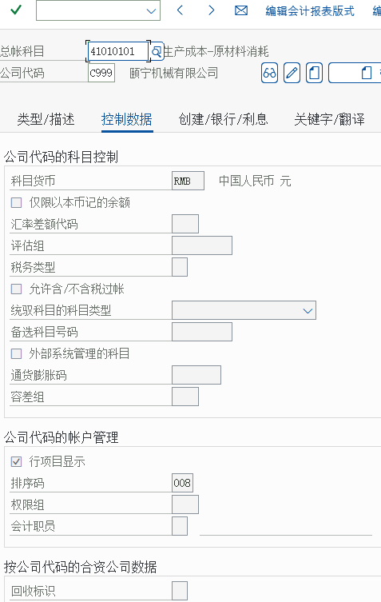
画面 75image79.png · 477×753 画面 74image78.png · 618×495 画面 75image79.png · 477×753 -
创建生产成本－原材料消耗
41010101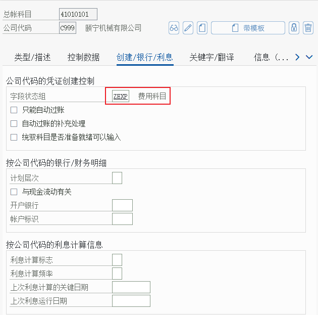
画面 78image80.png · 630×623 -
创建生产成本－订单差异 41010901
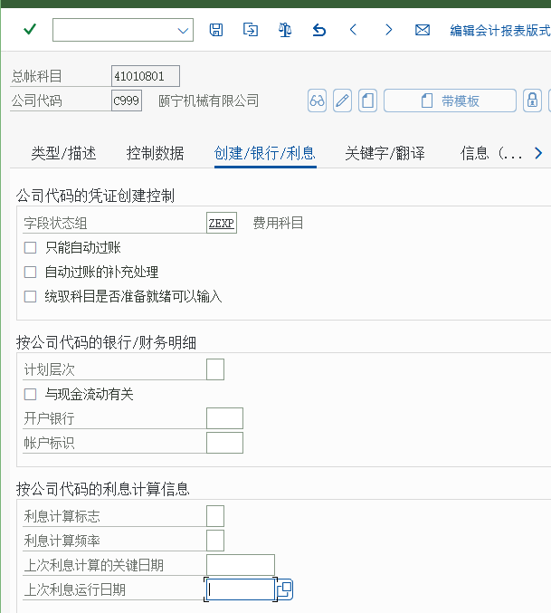
画面 79image84.png · 609×677 
画面 80image85.png · 637×780 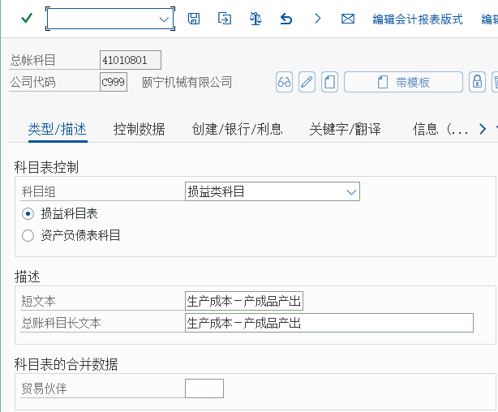
画面 81image86.png · 614×508 画面 79image84.png · 609×677 画面 80image85.png · 637×780 画面 81image86.png · 614×508 -

画面 85image90.png · 637×670 
画面 86image91.png · 630×769 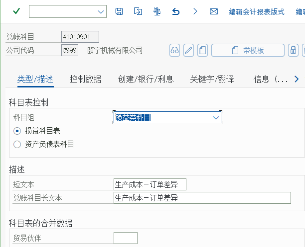
画面 87image92.png · 612×497 画面 85image90.png · 637×670 画面 86image91.png · 630×769 画面 87image92.png · 612×497 -

画面 91image93.png · 627×680 
画面 92image94.png · 632×438 -
创建制造费用－工资 41050101

画面 93image95.png · 620×508 -

画面 94image96.png · 635×408 -
创建制造费用－电费 41050121

画面 95image99.png · 633×352 
画面 96image100.png · 640×685 画面 95image99.png · 633×352 画面 96image100.png · 640×685 -

画面 99image101.png · 645×697 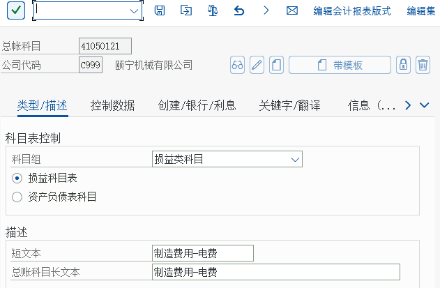
画面 100image102.png · 631×413 -
创建主营业务收入－贸易商品 51010201
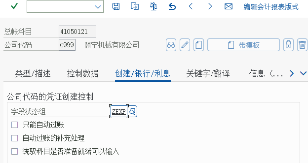
画面 101image103.png · 624×331 -

画面 102image104.png · 624×700 
画面 103image105.png · 647×424 -
创建主营业务收入－自制产品 54010101
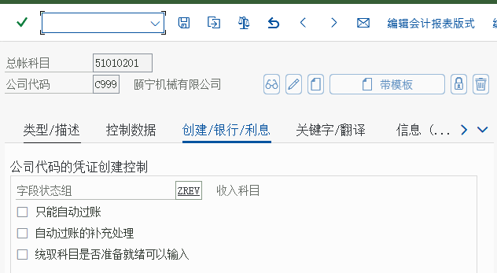
画面 104image106.png · 632×347 -

画面 105image107.png · 606×692 
画面 106image108.png · 620×407 -
创建主营业务成本－贸易商品 54010201

画面 107image109.png · 636×364 -
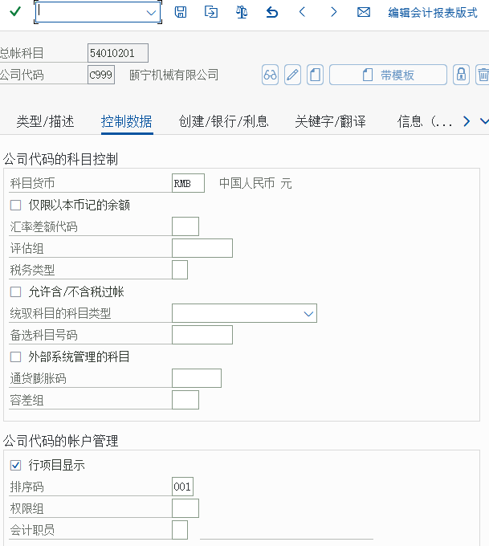
画面 108image110.png · 609×680 
画面 109image111.png · 635×413 -
创建主营成本－采购价差 54010301

画面 110image112.png · 636×338 -

画面 111image113.png · 649×627 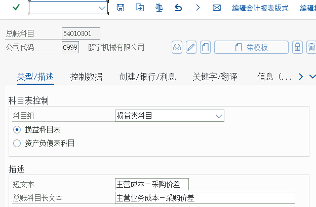
画面 112image114.png · 624×408 -
创建主营业务成本－生产订单差异 54010401
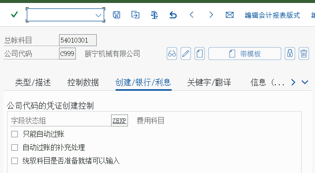
画面 113image115.png · 635×349 -
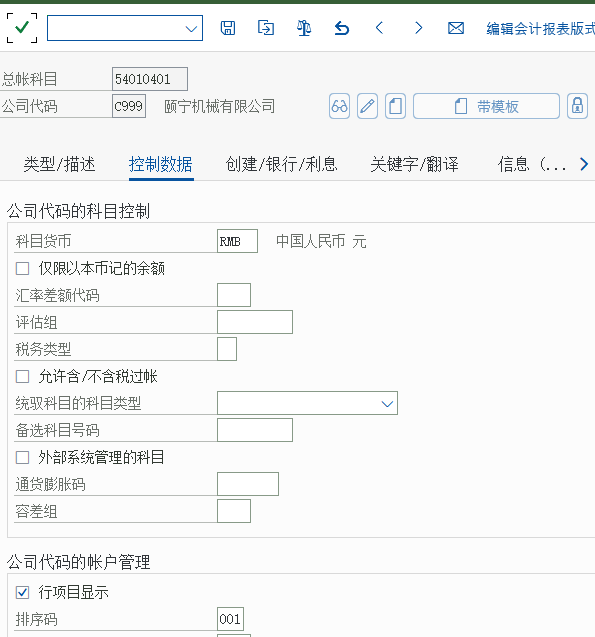
画面 114image116.png · 595×637 
画面 115image117.png · 642×417 -
创建销售费用－运费 55010101

画面 116image118.png · 619×343 -
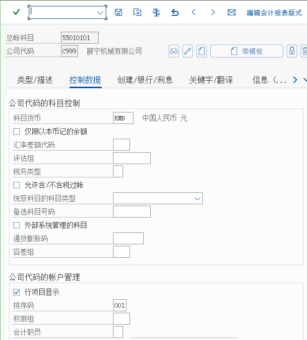
画面 117image119.png · 619×686 
画面 118image120.png · 652×421 -
创建销售费用－市场费用 55010111

画面 119image121.png · 634×332 -
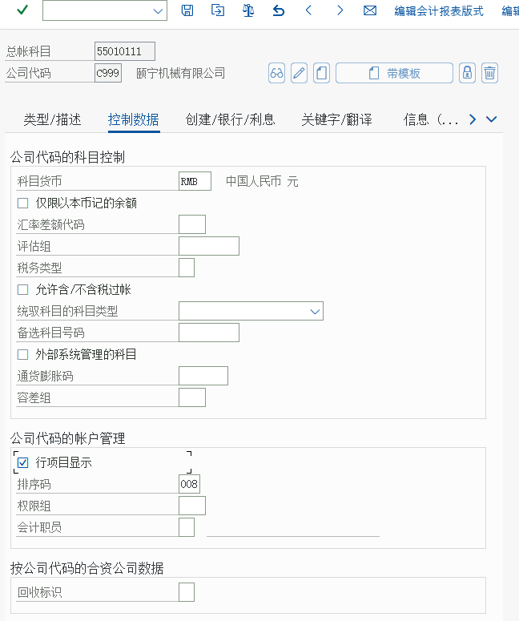
画面 120image122.png · 648×775 
画面 121image123.png · 631×422 -
创建管理费用－工资 55020101
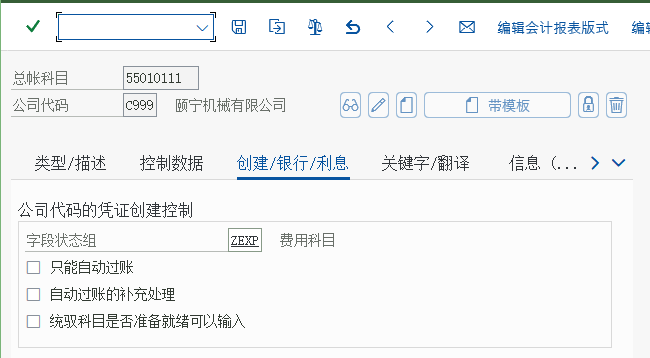
画面 122image124.png · 650×358 -

画面 123image125.png · 558×692 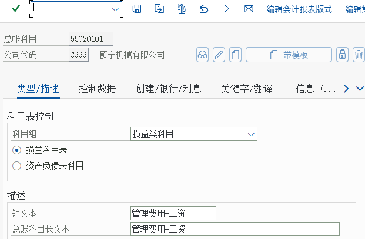
画面 124image126.png · 621×407 -
创建管理费用－折旧 55020111
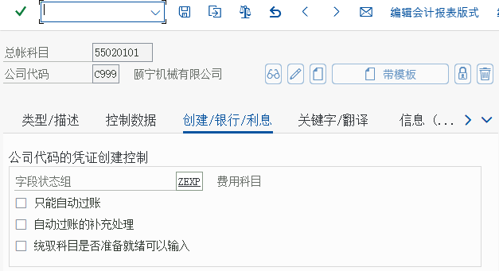
画面 125image127.png · 627×341 -

画面 126image128.png · 650×631 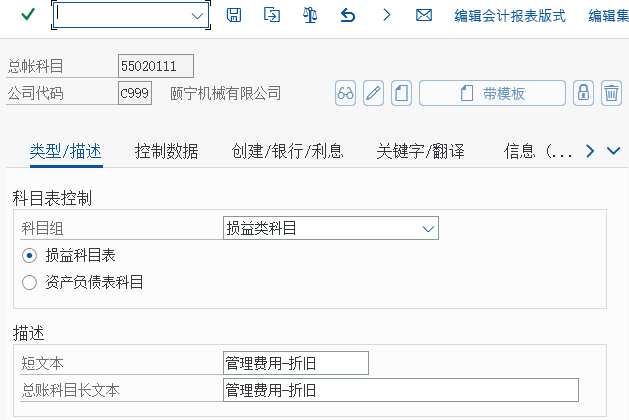
画面 127image129.png · 629×420 -
创建管理费用－电话费 55020121
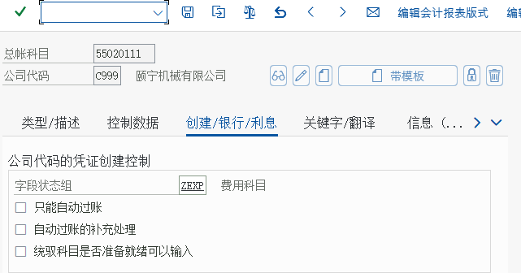
画面 128image130.png · 641×336 -

画面 129image131.png · 631×628 
画面 130image132.png · 609×404 -
创建管理费用－办公用品 55020131

画面 131image133.png · 648×356 -
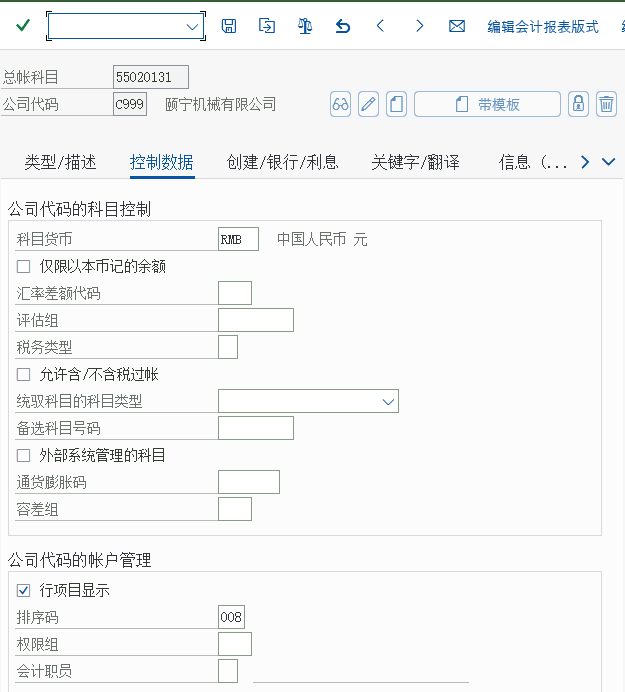
画面 132image134.png · 625×692 
画面 133image135.png · 631×424 -
创建管理费用－租金 55020141

画面 134image136.png · 601×330 -

画面 135image137.png · 609×625 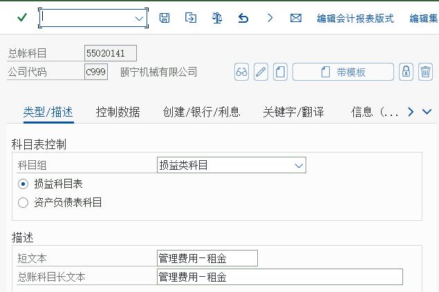
画面 136image138.png · 635×423 -
创建管理费用－其他 55029101
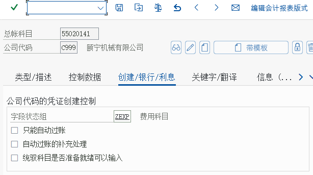
画面 137image139.png · 614×343 -

画面 138image140.png · 643×642 
画面 139image141.png · 635×420
显示科目汇总
1 画面 / 1 步-
解释： 创建上述步骤中创建的会计科目

画面 140image143.png · 752×661 教材笔记S_alr_87012326
复制凭证号码范围到公司代码
5 画面 / 4 步-
财务会计(新)－财务会计全局设置(新)－凭证－凭证号范围－复制到公司代码

画面 141image144.png · 392×481 
画面 142image145.png · 599×562 -
解释： SAP 中对于凭证等需号码的单据，均需要用号码范围来进行管理。通常号码范围设置好之后即可分配到各自使用的范围内。
输入源公司(0001)及目标公司(C999)
画面 143image146.png · 613×329 -
点击是
画面 144image147.png · 368×208 -
按上一屏继续操作（画面 145）

画面 145image148.png · 919×564
定义记帐期间变式
2 画面 / 1 步-
财务会计(新)－财务会计全局设置(新)－分类账－会计年度和过账期间－过账期间-定义未清过账期间变式

画面 146image149.png · 519×576 
画面 147image150.png · 398×118 踩坑提醒解释：这是用来对凭证的开关。已经关掉的会计期间就不允许对凭证进行更改。多个公司代码可以被统一控制开账和关帐。先给各个公司代码赋予记账期间变式参数。教材笔记P999 颐宁记账期间变式
将记帐期间变式分配给公司代码
2 画面 / 1 步-
按上一屏继续操作（画面 148）

画面 148image151.png · 513×485 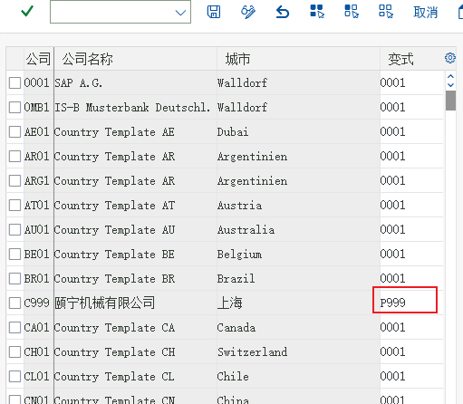
画面 149image152.png · 511×446 教材笔记P999
财务会计(新)－财务会计全局设置(新)－分类账－会计年度和过账期间－过账期间-将变式分配给公司代码
设置记帐期间(前台)
4 画面 / 2 步-
解释: 完成开帐和关帐，通常作为月结的一个环节。
会计核算－财务会计－总帐－环境－当前设置－未清过帐期间和已结过帐期间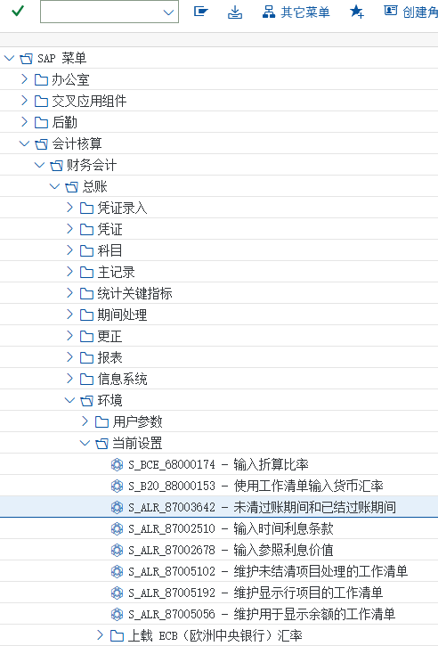
画面 150image153.png · 492×725 
画面 151image154.png · 361×194 -
P999 +/A/D/K/S 1-12 期间 2006 年 13－16 期间，+/A/D/K/S 分别代表如下含义

画面 152image155.png · 171×266 
画面 153image156.png · 673×304
定义过帐容差组
3 画面 / 2 步解释：设置对会计人员出凭证的一些限定,比如：单笔凭证的金额不能超过多少，
-
财务会计(新)－财务会计的全局设置(新)－凭证－容差组－定义雇员的容差组

画面 154image157.png · 344×577 
画面 155image158.png · 567×352 -
单笔未清项(如发票)的金额不能超过多少。我们把这些条件设置在容差组里,再给会计人员分配容差组
复制一条
画面 156image159.png · 601×426
输入总帐科目凭证
FB50FB034 画面 / 4 步-
解释: ：在总帐中输入会计凭证，记录我们收到 2 800 000 的实收资本，存入工商银行账户。事务代码 FB50

画面 157image160.png · 409×344 -
10020101 31010101
输入不同公司的凭证可点击公司代码按钮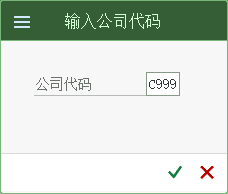
画面 158image161.png · 228×194 -
按上一屏继续操作（画面 159）
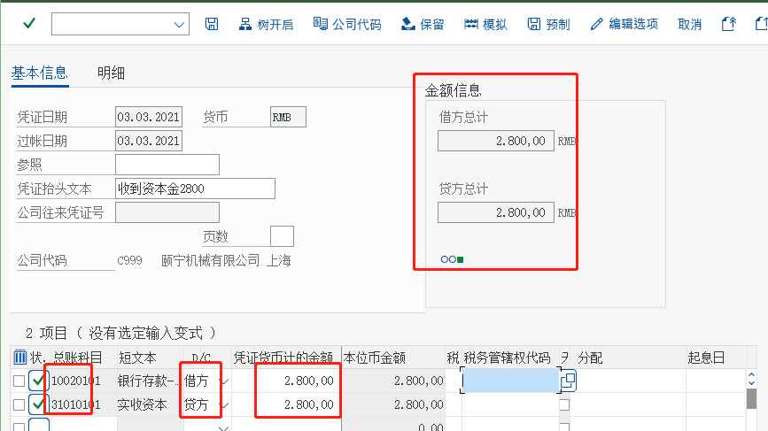
画面 159image162.png · 867×487 -
可预制，也可以直接保存后过账（下图为FB03查询得到的结果）

画面 160image163.png · 721×344
显示总帐科目余额
FS10N11 画面 / 7 步| 项目 | 文档中的取值 |
|---|---|
| 定义进项税 | 21710101 |
-
事务代码 FS10N
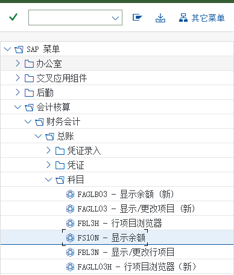
画面 161image164.png · 388×455 
画面 162image165.png · 614×180 -
按上一屏继续操作（画面 163）

画面 163image166.png · 630×773 -
1、 维护自动税收过帐

画面 164image167.png · 461×437 -
定义销项税

画面 165image168.png · 567×565 -
双击销项税，定义销项税
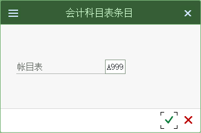
画面 166image169.png · 333×221 
画面 167image170.png · 503×222 -
点击保存按钮，输入 21710102

画面 168image171.png · 514×243 -
按上一屏继续操作（画面 169）
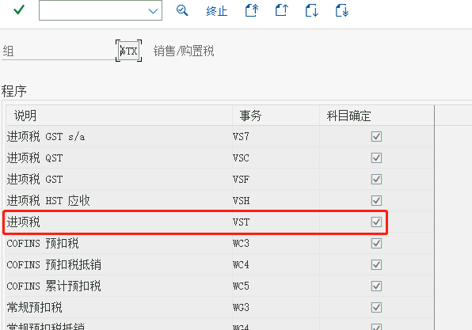
画面 169image172.png · 596×417 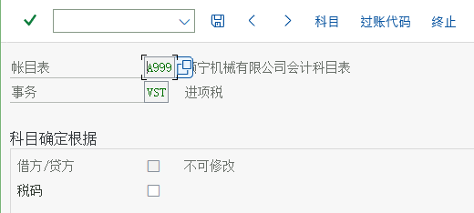
画面 170image173.png · 520×234 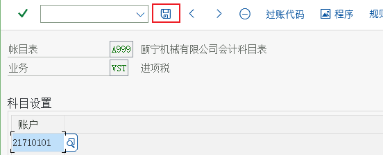
画面 171image174.png · 552×224
定义应收应付容差组
后台3 画面 / 2 步-
解释： 对于和客户或供应商的收付业务，我们可以定义一些控制条件。比如对某类客户的收款差异不能超过 100 元，或发票的 0.1%等。容差组是分配给每个客户和供应商的主数据。
财务会计(新)－应收账目和应付账目－业务交易－对外支付－付款－手工对外支付－定义容差组
画面 172image175.png · 357×537 -
复制 0001 的
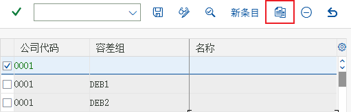
画面 173image176.png · 511×164 
画面 174image177.png · 529×775
定义供应商账号组
后台11 画面 / 8 步解释：供应商是按照账户组来管理的，如原料供应商，贸易产品供应商等。供应商主数据信息分三个层次：一般数据，公司代码数据和采购数据。
-

画面 175image180.png · 437×475 
画面 176image181.png · 425×551 画面 175image180.png · 437×475 画面 176image181.png · 425×551 -
G001组 原材料，对其设置 G002组 贸易商品供应商 G003组 费用供应商
财务会计－应收账目和应付账目－供应商账号－主数据－供应商主数据创建准备－定义带有屏幕格式的账户组（供应商）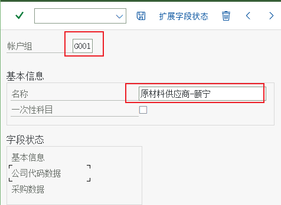
画面 179image182.png · 476×348 -
双击基础数据

画面 180image183.png · 417×358 -
双击地址

画面 181image184.png · 563×890 -
双击公司代码数据
画面 182image185.png · 255×334 -
双击账户管理

画面 183image186.png · 570×716 -
双击支付交易

画面 184image187.png · 595×720 教材笔记同理创建其他的组（复制方式创建） -
拷贝 G002 G003
画面 185image188.png · 295×194
定义供应商账户编号范围
后台6 画面 / 5 步点击间隔 点击间隔＋,点击三次，一次维护
Z1 10000000 19999999
-
财务会计－应收账目和应付账目－供应商账户－主数据－供应商主记录创建准备－创建供应商账户编号范围

画面 186image189.png · 406×680 -
按上一屏继续操作（画面 187）
画面 187image190.png · 470×159 画面 188image191.png · 568×219 -

画面 189image192.png · 570×288 -
Z2 20000000 29999999
Z3 30000000 39999999画面 190image193.png · 566×393 -
按上一屏继续操作（画面 191）
画面 191image194.png · 599×562
分配供应商编号范围
后台2 画面 / 1 步-
财务会计－应收账目和应付账目－供应商账户－主数据－供应商主记录创建准备－供应商账户组分配编号范围

画面 192image195.png · 434×605 画面 193image196.png · 408×382
定义客户账户组
后台10 画面 / 8 步-
财务会计(新)－应收账款和应付账款－客户账户－主数据－创建客户主记录准备－定义带有格式的账户组（客户）

画面 194image197.png · 465×394 -
创建新条目

画面 195image198.png · 430×347 -
K001 订货方-颐宁

画面 196image199.png · 464×382 -
双击基本信息

画面 197image200.png · 409×442 教材笔记双击地址 -
按上一屏继续操作（画面 198）
画面 198image201.png · 255×370 -
拷贝 K001
-
K002 收货方-颐宁
退回后，双击公司代码数据
画面 202image205.png · 242×367 -
双击账户管理

画面 203image206.png · 455×371


定义客户账户编号
后台5 画面 / 4 步-
财务会计(新)－应收账款和应付账款－客户账户－主数据－创建客户主记录准备－创建客户账户编号范围
画面 204image207.png · 475×710 
画面 205image208.png · 448×147 -
Z1 10000000 19999999

画面 206image209.png · 430×237 -
Z2 20000000 29999999

画面 207image210.png · 526×288 -
按上一屏继续操作（画面 208）

画面 208image211.png · 599×562
分配客户编号范围
2 画面 / 1 步-
财务会计(新)－应收账款和应付账款－客户账户－主数据－创建客户主记录准备－分配客户账户编号范围
画面 209image212.png · 434×585 
画面 210image213.png · 410×241
新建订货方主数据
FD019 画面 / 4 步| 项目 | 文档中的取值 |
|---|---|
| 再创建一个威力国贸公司 | 100000002 |
-
建立三个客户:远东造船长, 新益汽轮机场.威力工贸公司 事务代码 FD01
-
统驭科目 11310101 排序码 001
画面 216image219.png · 608×526 画面 217image220.png · 492×576 -
远东造船厂

画面 218image221.png · 347×37 -
按上一屏继续操作（画面 219）

画面 219image222.png · 379×115

新建收货方主数据
FD010 画面 / 0 步FD01
新建供应商主数据
FK016 画面 / 1 步原料供应商--红星轴承厂，长平铁工厂，
公司代码依次如下(付款条件为001)：
-
贸易商品供应商--思普机械设备进出口有限公司 费用供应商---上海市电力公司，佳音房地产有限公司，京通运输公司
FK01画面 220image226.png · 1031×358 
画面 221image227.png · 264×533 
画面 222image228.png · 356×308 画面 220image226.png · 1031×358 画面 221image227.png · 264×533 画面 222image228.png · 356×308 教材笔记红星：10000000 长平铁工厂：10000001思普机械设备进出口有限公司：20000000教材笔记上海电力:30000000 佳音地产公司：30000001 京通运输公司：30000002
输入客户发票
FB703 画面 / 2 步-
卖给远东造船厂一批货物，含税销售额 58000 需要录入相应的会计凭证
FB70画面 226image229.png · 328×439 
画面 227image230.png · 751×600 教材笔记模拟 -
按上一屏继续操作（画面 228）

画面 228image231.png · 724×294
收到客户全额还款
5 画面 / 4 步-
画面 229image232.png · 484×437 -
解释： 全额则只需要清账,而部分还款则需要先清掉原来的帐单,再把剩余的金额生成另外一张单
会计－财务会计－应收帐款－凭证输入－F-28 收款
画面 230image233.png · 601×646 
画面 231image234.png · 718×821 -
模拟

画面 232image235.png · 560×301 -
按上一屏继续操作（画面 233）
画面 233image236.png · 593×325
收到客户部分还款
FB707 画面 / 4 步-
按上一屏继续操作（画面 234）
教材笔记点击剩余项目 -
光标放到剩余项，双击
画面 237image240.png · 1055×855 -
模拟

画面 238image241.png · 791×854 -
双击凭证 002 行
画面 239image242.png · 601×360 
画面 240image243.png · 640×520 教材笔记返回后保存

显示应收帐款余额
4 画面 / 1 步-
会计－财务会计－应收帐款－信息系统－应收帐款会计核算报表－客户余额—s_alr_87012172

显示客户余额
FD10N2 画面 / 2 步-
会计－财务会计－应收帐款－账户－FD10N

画面 245image249.png · 615×152 -
按上一屏继续操作（画面 246）

画面 246image250.png · 807×766
收到供应商发票
FB605 画面 / 1 步-
会计－财务会计－应付帐款－凭证输入－FB60 发票


模拟
1 画面 / 1 步向供应商付款
3 画面 / 2 步-
会计－财务会计－应付帐款－凭证输入－付款－F-53 过帐
画面 253image258.png · 373×594 -
按上一屏继续操作（画面 254）

画面 254image259.png · 716×826 画面 255image260.png · 724×338 教材笔记模拟
显示应付帐款余额
3 画面 / 1 步-

画面 256image261.png · 616×861 
画面 257image262.png · 1087×506 
画面 258image263.png · 434×677
显示供应商余额
FK10N7 画面 / 2 步-
会计－财务会计－应付帐款－账户－FK10N－显示余额

画面 259image264.png · 344×480 -
按上一屏继续操作（画面 260）
画面 260image267.png · 608×169 
画面 261image268.png · 797×777 画面 260image267.png · 608×169 画面 261image268.png · 797×777 
画面 264image269.png · 659×523 
画面 265image270.png · 603×504 教材笔记双击第3行的行项目
总帐科目余额汇总表
5 画面 / 2 步-
会计－财务会计－总帐－信息系统－总帐报表(新)－科目余额－常规－总帐科目余额－

画面 266image273.png · 473×634 
画面 267image274.png · 628×547 画面 266image273.png · 473×634 画面 267image274.png · 628×547 -
按上一屏继续操作（画面 270）

画面 270image275.png · 1212×636
将收入科目设置为只能自动记帐
FS007 画面 / 2 步-
按上一屏继续操作（画面 271）

画面 271image276.png · 614×667

{kind=link}
{kind=link}
{kind=link}
{kind=link}
{kind=link}
{kind=link}
{kind=link}
{kind=link}
{kind=link}
{kind=link}
{kind=link}
{kind=link}
{kind=link}
{kind=link}
{kind=link}
{kind=link}
{kind=link}
{kind=link}
{kind=link}
{kind=link}
{kind=link}
{kind=link}
{kind=link}
{kind=link}
{kind=link}
{kind=link}
{kind=link}
{kind=link}
{kind=link}
{kind=link}
{kind=link}
{kind=link}
{kind=link}
{kind=link}
{kind=link}
{kind=link}
{kind=link}
{kind=link}
{kind=link}
{kind=link}
{kind=link}
{kind=link}
{kind=link}
{kind=link}
{kind=link}
{kind=link}
{kind=link}
{kind=link}
{kind=link}
{kind=link}
{kind=link}
{kind=link}
{kind=link}
{kind=link}
{kind=link}
{kind=link}
{kind=link}
{kind=link}
{kind=link}
{kind=link}
{kind=link}
{kind=link}
{kind=link}
{kind=link}
{kind=link}
{kind=link}
{kind=link}
{kind=link}
{kind=link}
{kind=link}
{kind=link}
{kind=link}
{kind=link}
{kind=link}
{kind=link}
{kind=link}
{kind=link}
{kind=link}
{kind=link}
{kind=link}
{kind=link}
{kind=link}
定义资产负债表和损益表结构
后台29 画面 / 23 步11 流动资产
1131 应收账款
1201存货
120101 材料采购
121101 存货-原材料
123101 存货-贸易商品
124301 存货-产成品
1001 货币资金
21 负债
212101 应付账款
217101 未交税金
31 所有者权益
3101 实收资本
5 损益及利润分配表
51 主营业务利润
5101 主营业务收入
510102 主营业务利润-贸易商品
5401 主营业务成本
5402 主营业务税金及附加
55 费用
5501 销售费用
5502 管理费用
5503 财务费用
57 所得税
58 利润分配
59 本年净增未分配利润
6 P+L P＋L 结果分配账户
选择 100101 现金，点击分配会计科目
11 流动资产
1001 货币资金
100101 现金
0010010101 现金
100201 银行存款
1131 应收账款
1201 存货
120101 材料采购
121101 存货-原材料
123101 存货-贸易商品
21 负债
2101 流动负债
217101 未交税金
21710101 未交增值税-进项税额
21710102 未交增值税-销项税额
2222 长期负债
31 所有者权益
3101 实收资本
3141 期初未分配利润
5 损益及利润分配表
51 主营业务利润
5101 主营业务收入
510101 主营业务利润-自制
510102 主营业务利润-贸易商品
5401 主营业务成本
540101 主营业务成本-自制
540102 主营业务成本-贸易商品
5402 主营业务税金及附加
55 费用
5501 销售费用
5502 管理费用
0055020101 管理费用－工资
0055020111 管理费用－折旧
0055020121 管理费用－电话费
0055020131 管理费用－办公用品
0055020141 管理费用－租金
0055029101 管理费用－其他
5503 财务费用
57 所得税
58 利润分配
-
财务会计－总帐会计－业务往来－结算－编制凭证－定义会计报表版本

画面 278image283.png · 380×464 -
按上一屏继续操作（画面 279）

画面 279image284.png · 543×569 -
新的分录

画面 280image285.png · 361×324 -
点击会计报表项目

画面 281image286.png · 372×309 画面 282image287.png · 510×247 教材笔记双击资产 -
按上一屏继续操作（画面 283）

画面 283image288.png · 396×788 -
填写如下：
画面 284image289.png · 663×851 -
选择颐宁公司财务报表版本，点击创建项目 8 损益及利润分配表

画面 285image290.png · 522×369 -
选中资产，点击创建项目

画面 286image293.png · 537×278 
画面 287image294.png · 767×430 画面 286image293.png · 537×278 画面 287image294.png · 767×430 -
15 固定资产
18 无形及递延资产
画面 290image295.png · 382×286 教材笔记21 负债 -
选中负债及所有者权益，点击创建项目

画面 291image296.png · 522×231 
画面 292image297.png · 521×239 -
100101 现金
100201 银行存款
画面 293image298.png · 312×648 教材笔记2101 流动负债 -
21710101 未交增值税-进项税额
21710102 未交增值税-销项税额画面 294image299.png · 514×519 -
3141 期初未分配利润
3142 本年净增未分配利润画面 295image300.png · 577×417 -
选中净值结果：亏损，调整到 3142 下

画面 296image301.png · 1005×826 画面 297image302.png · 764×654 -
按上一屏继续操作（画面 298）

画面 298image303.png · 433×442 -
净值结果：利润和亏损两个系统预定义的报表项目会自动计算资产负债表的轧差数，实质上就是本年净增（或净减）的未分配利润数
画面 299image304.png · 510×725 教材笔记P&L 结果也是系统预定义的报表项目，它自动计算损益表和利润分配表的轧差数，实质上也是“本年净增未分配利润”。 -
按上一屏继续操作（画面 299）
画面 299image304.png · 510×725 教材笔记510101 主营业务利润-自制 -

画面 301image305.png · 298×572 -
10010101 10019999
D 指如果科目余额在借方，就归入这个报表项目
画面 302image306.png · 510×898 -
1 资产 资产

画面 303image307.png · 559×825 教材笔记A999 0010010101 - 0010019999 X X -
124301 存货-产成品
A9990012430101 - 0012439999 X X画面 304image308.png · 606×859 教材笔记212101 应付账款 -
3142 本年净增未分配利润
7 净值结果：亏损 净值结果：亏损
画面 305image309.png · 543×857 教材笔记540103 主营业务成本-差异结算 -
59 本年净增未分配利润
6 P+L P＋L 结果
画面 306image310.png · 393×675
{kind=link}
{kind=link}
{kind=link}
{kind=link}
{kind=link}
{kind=link}
{kind=link}
运行资产负债表
3 画面 / 3 步-
按上一屏继续操作（画面 307）
画面 307image311.png · 488×572 -
画面 308image312.png · 675×563 -
10 代表本位币

画面 309image313.png · 1147×687
{kind=link}
{kind=link}
4. 关于截图与取值
S4.docx 中作者在真实系统里截取的中文界面画面（原始文件名 imageNNN.png 保留在每张图的图注里，可与 Word 原文逐张对照）。本站没有对这些画面做任何重绘或模拟。C999、公司名「颐宁机械有限公司」、工厂 F999、物料 R999-100/T999-100/F999-100、客户 K001/K002 等）都来自原作者的教材环境。照着手顺做时，操作顺序与配置点可以照搬，具体编号/名称请换成你自己系统里的值；遇到与文档不同的提示消息，先看「排错与踩坑」页里原文档记录的同类问题。